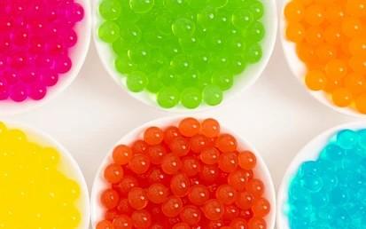
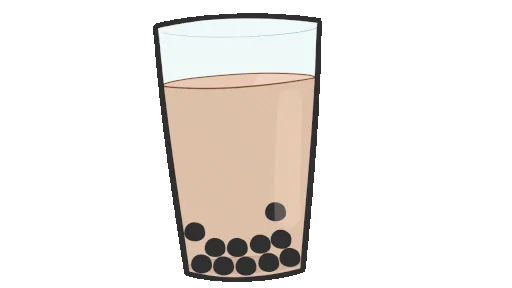
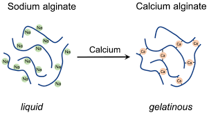

⏲ 4 hours and 30 minutes

Popping boba are little balls filled with liquid. When you bite into them they burst. It is used in various drinks like bubble tea. You can make them in every flavour you desire. When mixed with a lemonade or other beverage the flavors combine when you bite into them.
THe sodium ions attached to the alginate will be replaced with calcium ions. Creating a gelatinous outerlayer when it comes in contact with the calciumalginate

1. Add the sodium alginate to the lemonade or other drink
(optional: 1 drop of foodcoloring), mix and let the powder completely
dissolve. Set aside for at least 4 hours or overnight
2. In a bowl add the calciumlactate and cold water
3. Use a dropper and place drops of the lemonade/sodium solution
into the calciumlactate water. You will get round little balls.
4. Use a strainer to remove the boba after 1 minute and rinse
them with water.
5. Add the boba to your favorite drink and enjoy!